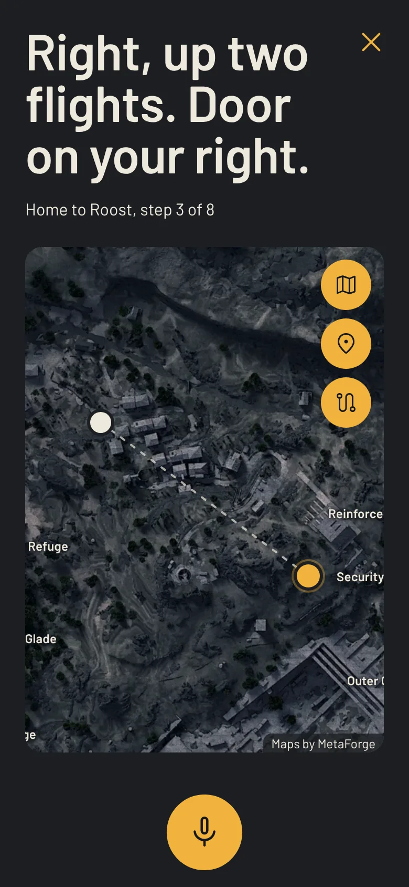

Ask. Find.
Get out.
A voice companion for ARC Raiders. Ask where to go, hear the answer, keep playing.

Just ask.
Say “Hey Relay” or tap, and talk like you would to a teammate. ArcRelay answers out loud, then listens for a follow-up, so your eyes stay on the TV and your hands stay on the pad.
Get the app
Know where to go.
Hear the route, glance at the instruction. One dot on the map shows exactly where, so you can drop your waypoint in-game without scrolling a guide full of adverts. Hunting for Dead Flowers? It names the best place to look, and tells you straight when something has no fixed spot.
Get the app
Need a quick evac?
Say where you are, and ArcRelay names the nearest way out and shows the route on the map. Short on time? Tell it how many minutes are left and it gets straight to the point.
Get the app
Show it where you are.
Can't remember the name of the place? Tap your spot on the map and confirm. ArcRelay works out the nearest way out, or your next step, from right where you're standing.
Get the app